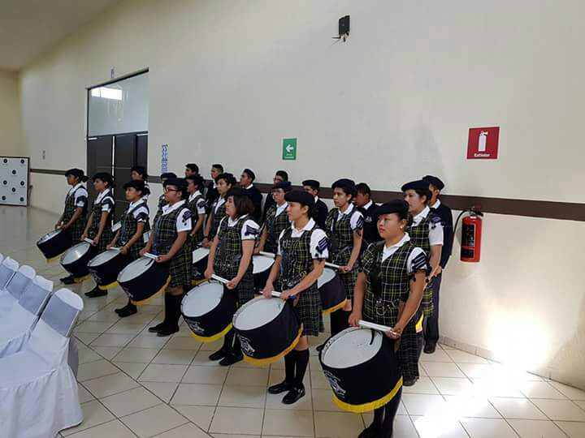

BANDA DE GUERRA
La banda de guerra se desempeña en los homenajes, participa en los eventos en donde el CBT es anfitrion y en todos los desfiles. Se conforma por alumnos que esten interesados en formar parte de ella.
Las clases de banda de guerra son los dias jueves de 3:10-4:30.
